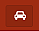

Menu vybrané trasy
Pokud si uživatel vybere kampaň, v horní části se objeví následující menu.
Tlačítko pro návrat k zobrazení obou kampaní.
Datum vybrané kampaně.
 Tlačítko pro optimalizaci trasy.
Tlačítko pro zobrazení současné polohy tabletu na mapě.
Celková délka trasy a doba optimální cesty bez zastávky (dle google funkce)
Název vybrané kampaně.
Aktuální GPS souřadnice tabletu.